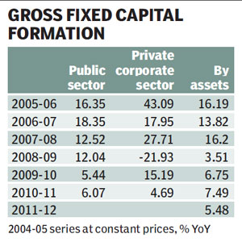
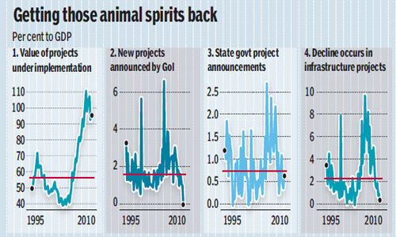
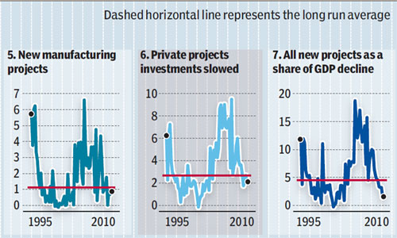

Chidambaram's challenge
Financial Express, 23 August 2012
Reviving investment is critical to getting GDP back on track, but that is a deep-rooted problem
Finance minister P Chidambaram's biggest challenge will be how to revive growth and investment in the economy. Investment data suggests that the problem is deep rooted. Looking forward, announcements of infrastructure projects, where the interaction between government policies and investment is the highest, has seen a sharp decline in recent quarters. Reviving sentiments, fast-tracking government projects and implementing policies to encourage private investment is the only way the government can prevent growth from slipping further.
In the high growth years in India before the financial crisis, the growth in gross fixed capital formation was the driving force for output growth. During 2005-06 to 2007-08, investment grew by an average of more than 15% per annum. After the global financial crisis, this fell sharply to an average rate of 5.8% per annum for the next four years. In 2011-12, growth in investment was 5.48%. The problem was not limited to the private sector, which slowed down to 4.7% per annum in 2010-11, but also to the public sector, which slowed down to 6.1% in the same year (see table).
There has been a sharp decline in the production of capital goods as reflected by the IIP for capital goods. Production of capital goods has declined by 28% in June. However, most people have lost faith in this data. The numbers are volatile, often revised, and the coverage is suspect. Recent reports suggest that firms producing capital goods have not performed as badly as this data suggest. This data, on the nominal value of sales growth of capital goods firms, has raised doubts about the slowdown in investment activity. However, as reports of investment projects below suggest, these reports should not be the grounds for complacency.
We now look at quarterly data for investment projects under implementation from the CAPEX data base of CMIE. To normalise the nominal terms in which this data is available, we look at it as a percentage of GDP. Investment project data does not give precise estimates for the value or growth of capital goods, but certainly indicates the alarming decline that may be taking place. In the following figures, the dashed horizontal line represents the long run average.
As figure 1 shows, the total value of all investment projects under implementation kept rising as a per cent of GDP till 2010-11. This includes all public and private investment activity, other than unorganised sector and household investment activity in individually build residential houses. In recent quarters, however, this has declined by about 20% of GDP. Under very rough assumptions, if projects have an average life of three years, and we assume that spending is equal across all years, it would mean investment spending is lower by just a little less than 7% of GDP compared to two years ago. This implies a significant decline in investment activity.
Looking forward, we look at trends in announcements of new projects. CAPEX captures all projects at the stage when they are announced. After this, land would be acquired, permissions obtained, financial closure achieved and then implementation of the projects would start. This often involves a time lag. The time lag varies across sectors, and over years, when policies change. Some projects also get shelved and may never be announced.
Figure 2 shows new projects announced by the central government. This shows that the sum total of new projects announced by the central government is negative. In other words, more projects have been shelved in recent quarters than have been announced. Even if the government were to start announcing new projects from tomorrow, by the time these projects can be implemented, even with normal procedures, there will be a time lag. Data for state government project announcements, that are a smaller share of GDP, have also shown a slowdown, but not as bad as of the central government (figure 3).
Turning to the sectoral investment project announcements, we see that the sharpest decline has occurred in infrastructure projects (figure 4). This is to be expected, first, because most central government projects would fall within this category, and, second, because this sector has the most interaction with government. Fears of corruption charges or difficulties in procuring private firms to implement roads, power, port, bridges etc can cause delays. In contrast, new projects announced in manufacturing have not slowed down as much (figure 5).
Overall private projects' investments have come down, though not as much as public announcements (figure 6). The combined effect is that all new projects announced in the economy as a share of GDP have declined. In the coming quarters, this will lead to a decline in investment activity as projects under implementation will be a smaller share of GDP. This is bad news for output growth.
One way to revive investment activity may be to step up the speed with which projects are being implemented. Another is to quickly announce a slew of new projects which may be internal proposals within government, but have not been announced. Implementing this strategy across various ministries and departments will be finance minister P Chidambaram's biggest challenge.
Back up to Ila Patnaik's media page
Back up to Ila Patnaik's home page